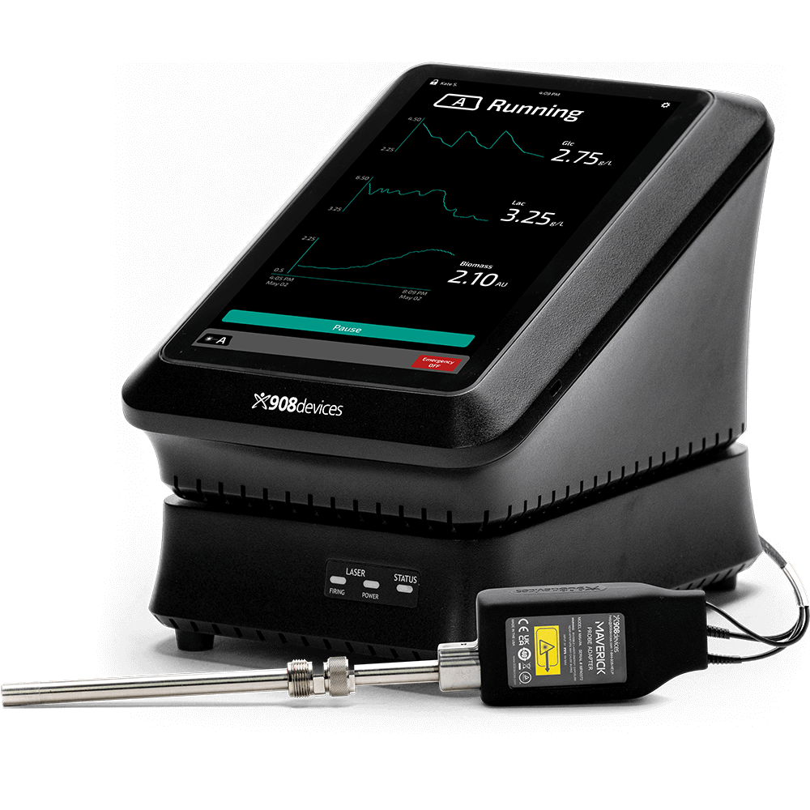
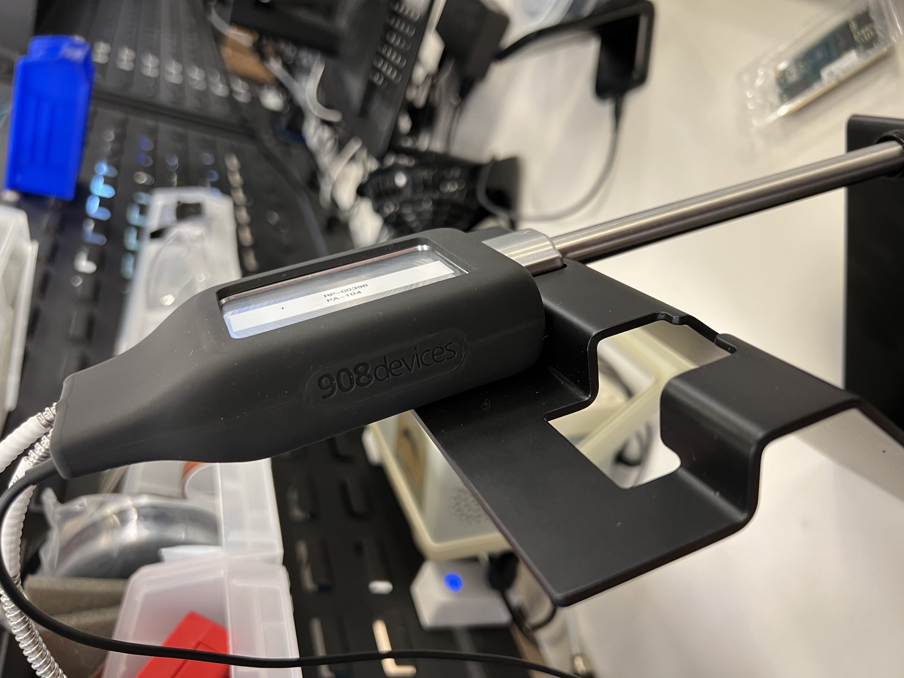
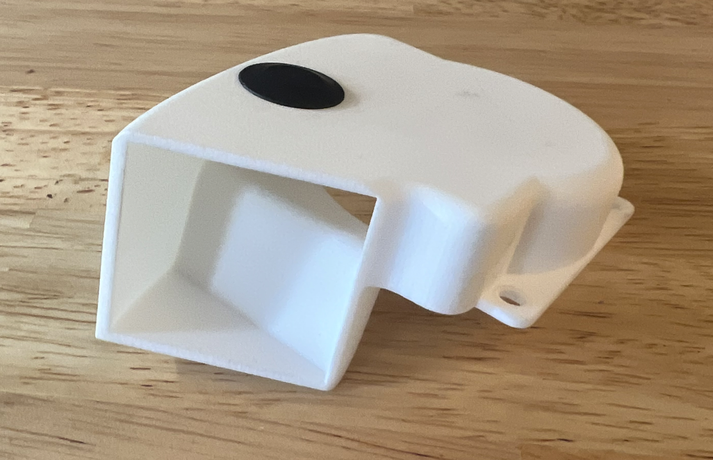

Maverick
I worked alongside engineers of different disciplines on many aspects of the Maverick product.
Maverick is a raman spectroscopy device which enables customers to measure glucose and lactate in bioreactors. I had a hand in the entire system:
the handheld portion, the top hub, and the bottom module. I was also responsible for designing the calibration stand, labels, internal cooling
components, heat sinks, and component layout in the compact footprint.

Surfacing

I designed organic parts with
surfacing techniques in SolidWorks, like the black rubber glove to the left, and the custom fan duct below.
